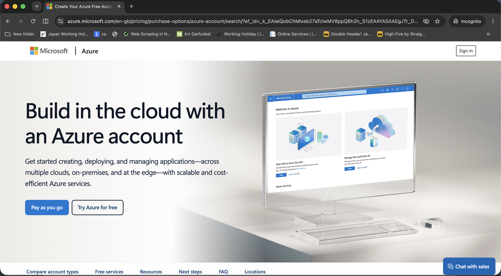
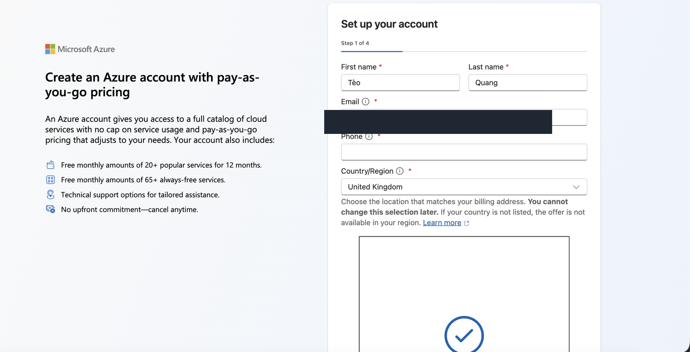
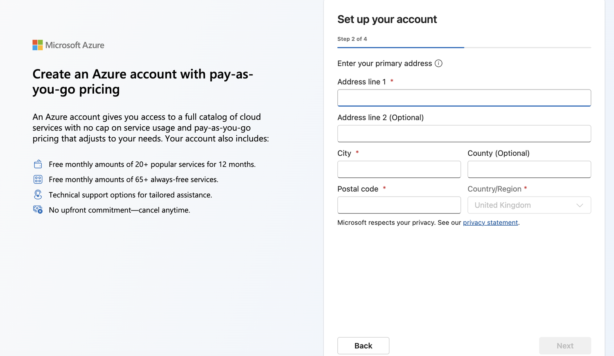
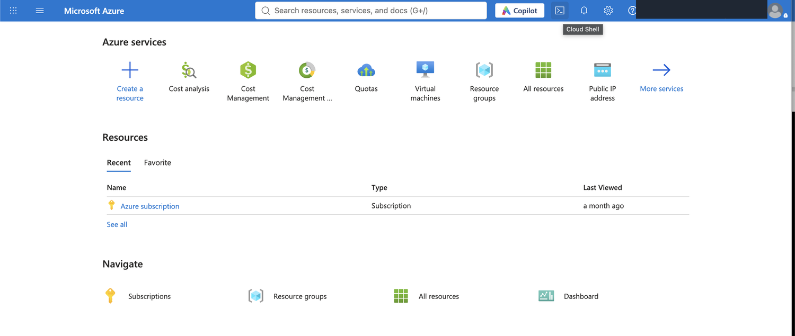

Hướng dẫn tạo proxy New Zealand trên Azure
1. Đăng ký tài khoản Azure
- Vào azure.microsoft.com.
- Bấm Pay as you go.
- Điền họ tên, email, số điện thoại và Country/Region theo địa chỉ thanh toán của bạn.
- Điền địa chỉ, xác minh số điện thoại và thêm thẻ thanh toán theo yêu cầu.



2. Mở Cloud Shell
- Vào portal.azure.com và đăng nhập.
- Bấm biểu tượng >_ trên thanh trên cùng.
- Chọn Bash và đợi Cloud Shell mở xong.
- Nếu chưa tải file, bấm tải nz-proxy-azure.sh tại đây. Sau đó chọn Manage files → Upload và tải file lên Cloud Shell.

3. Chạy script tạo proxy
Trong Cloud Shell, chạy lệnh dưới đây. Ví dụ này tạo 21 proxy:
N_IPS=21 bash nz-proxy-azure.sh
Không ghi N_IPS thì mặc định tạo 10 proxy. Để mật khẩu trống, script sẽ tự tạo mật khẩu ngẫu nhiên.
4. Lấy danh sách proxy
Khi chạy xong, script in ra IP, cổng HTTP, cổng SOCKS5, username và password. Danh sách cũng được lưu tại:
cat ~/nz-proxies.txt
Định dạng sử dụng là:
IP:PORT:USER:PASS
5. Gửi proxy cho mình kiểm tra
Sau khi script chạy xong, hãy gửi nguyên danh sách proxy cho mình qua kênh trao đổi riêng để mình kiểm tra từng IP, cổng HTTP và SOCKS5.
cat ~/nz-proxies.txt
- Mở file hoặc copy toàn bộ kết quả hiện trên Cloud Shell.
- Gửi nguyên dòng theo định dạng
IP:PORT:USER:PASScho mình. - Không đăng danh sách lên nhóm công khai hoặc gửi vào nơi nhiều người xem.
6. Bảng giá thuê Azure tham khảo
Giá tính theo thời gian sử dụng. Bảng dưới quy đổi theo tỷ giá tham khảo 1 USD = 26.170đ, áp dụng cho máy tại Auckland/New Zealand và chưa gồm mọi khoản phát sinh.
| Khoản | Giá tham khảo | Ghi chú |
|---|---|---|
| VM Azure Windows, khoảng 4 vCPU / 8 GB | Khoảng 10.100đ/giờ | Đã gồm Windows. |
| Public IP tĩnh | Khoảng 131đ/giờ/IP | Vẫn có thể tính phí khi VM đã tắt. |
| Ví dụ một giờ sử dụng | Khoảng 10.230đ/giờ | VM + một Public IP. |
| Băng thông | Tính theo lưu lượng | Proxy dùng càng nhiều thì chi phí càng tăng. |
| Ổ đĩa và tài nguyên khác | Tùy cấu hình | Có thể còn phí nhỏ nếu chỉ Stop mà chưa xóa. |
Stopped (deallocated). Khi xong hẳn, xóa resource group để xóa cả VM, disk, IP và mạng.Giá và tỷ giá có thể thay đổi. Hãy xem lại Cost Management trên Azure trước khi tạo máy.
7. Xóa khi không dùng nữa
Xóa resource group để xóa VM, disk, IP và mạng:
az group delete -n nz-proxy-rg --yes
az resource list -o table. Chỉ xóa khi bạn chắc chắn không còn tài nguyên cần giữ.